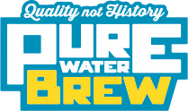

Changing the coneversation with the Pure Water Brew challenge to create mindset shift
* * *
 By Diane Taniguchi-Dennis · Deputy General Manager · Clean Water Services
By Diane Taniguchi-Dennis · Deputy General Manager · Clean Water Services
July 9th, 2018 · Singapore
When you said Pee Pee Pilsner, I immediately went to Poo Poo Porter.
Mmm, nothing like sitting back and cracking open a cold can of crisp amber ale...that was once sewage.

Water so clean it exceeds drinking water standards. Water so pure even healthy minerals are stripped away. Water recycled from the sewer.


Filtration
-
Infrastructure
Physical base of our purification process
-
Sensors & Controls
Flow and quality monitoring
-
Communication
Transmitting real-time data
-
Data Visualization
Software that visualizes our water data
-
Wiki
Objective dashboard for public review and education
An Invitation
* * *
The Pure Water Brew Sustainability Challenge
The start of the broader conversation we all need to have about the nature of water.
-
Department of Environmetnal Quality, Oregon
"Using recycled water will become increasingly important in our region as demands on our water resources increase."
-
Environment Protection Agency, U.S.A
"Pure Water Brew is an excellent example of our ability to take water that is otherwise thought of as waste and put it to direct positive value- as a beer."
The only thing remarkable about it is that it isn't remarkable at all.
Bill Gaffi, P.E., General Manager of Clean Water Services
Everyone beer!
I only love the lotus, which came out of mud yet is not contaminated, Washed by ripples yet is not voluptuous.
Thanks ·謝謝 · Terima Kasih · धन्यवाद @CleanWaterNews
 By Diane Taniguchi-Dennis
By Diane Taniguchi-Dennis
July 9th, 2018 · Singapore